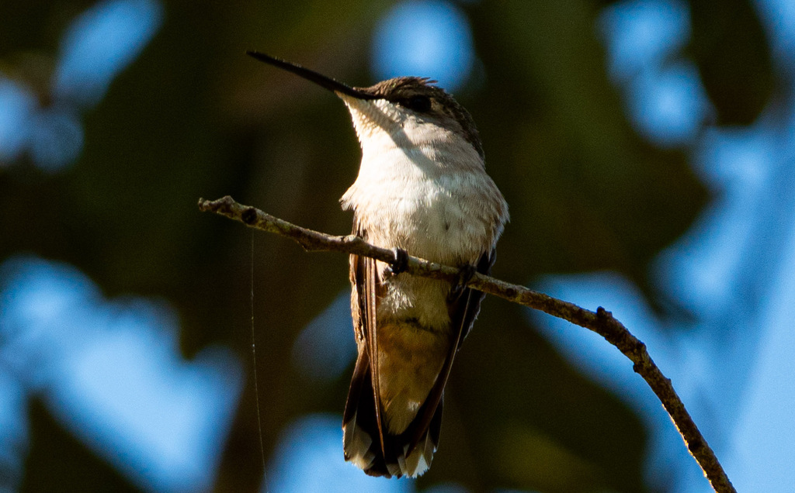

Archilochus colubris
Trochilidae
📷 Photo by Rob Carr · CC-BY-NC · via iNaturalist · 📅 Nov 14, 2025
Quick Hits
- The only breeding hummingbird in the eastern United States — a tiny, jewel-green bird that hovers at flowers and feeders, beating its wings about 53 times per second.
- The male's throat blazes iridescent ruby-red in the right light — turn your head and it looks black. The color is structural, not pigmented, created by microscopic platelets in the feathers.
- Every fall, many cross the Gulf of Mexico nonstop — roughly 500 miles of open water with nowhere to land.
- It weighs about as much as a penny, yet it is fiercely territorial and will chase birds many times its size away from a flower patch.
How to Spot It
Size
Tiny — about 3 inches long, weighing roughly a tenth of an ounce.
Male
Iridescent green above, white below, with a brilliant ruby-red throat (gorget) that can look black.
Female
Green above, white below, no red throat.
Flight
Hovers in place, wings beating so fast they blur.
Voice
A rapid, chittering series of notes; the hum of the wings is often the first clue.
What to Look For
A tiny hovering bird at flowers or feeders. Males flash a ruby-red throat in the right light. Listen for the humming of the wings.
What It Eats
Nectar from flowers and feeders; tiny insects and spiders for protein.
Where & When
Where in the park
Around the flower beds, especially tubular blooms. Listen for the wing hum.
When to see it
Most likely during fall and spring migration; some winter here. A seasonal visitor.
Watching It Respectfully
Observe and enjoy.
Also Known As
Ruby-throatRuby-throated Hummer
Photo Credits
- © Rob Carr (CC-BY-NC), via iNaturalist